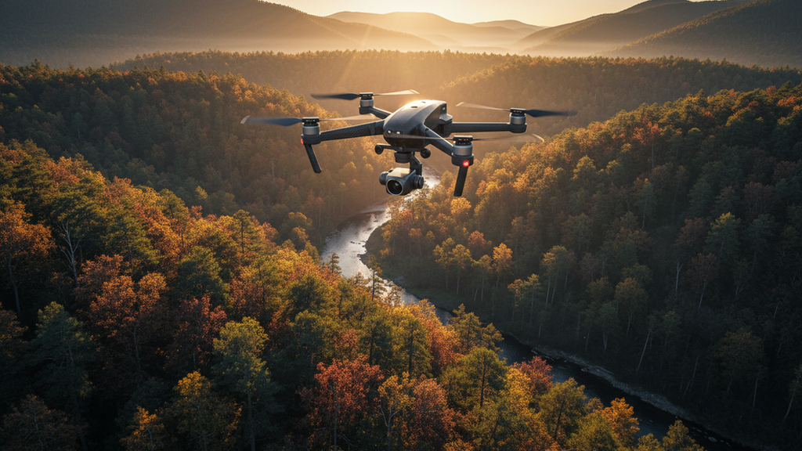
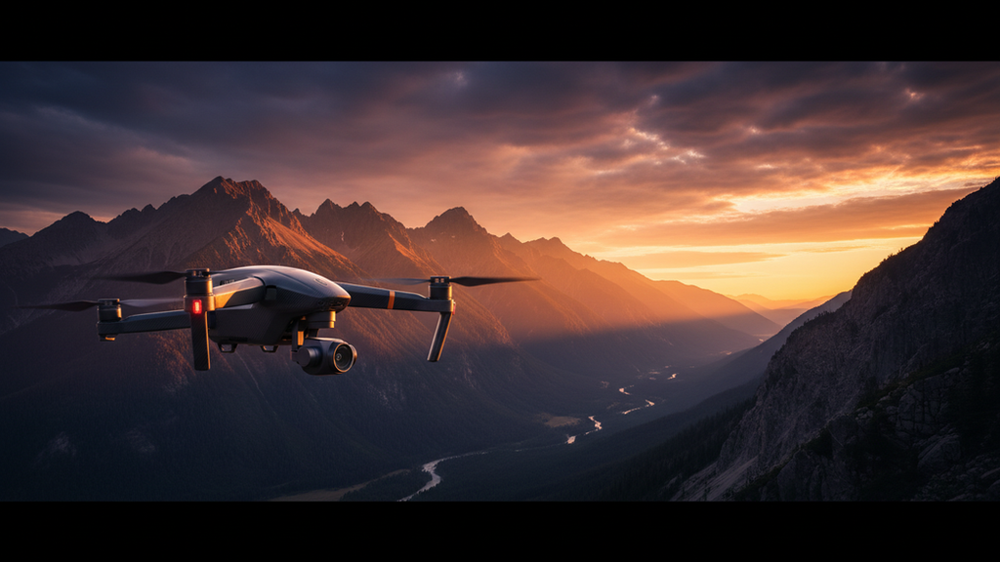

Enhance Your Visuals with Aerial Photography Techniques
When I first started exploring photography, I quickly realized that capturing images from the ground only tells part of the story. To truly elevate my visuals, I turned to aerial photography techniques.
When I first started exploring photography, I quickly realized that capturing images from the ground only tells part of the story. To truly elevate my visuals, I turned to aerial photography techniques. Using drones has opened up a whole new world of creative possibilities. Whether you’re a hobbyist or a professional, mastering these techniques can transform your photos and videos into stunning works of art.
In this post, I’ll share practical tips and insights to help you enhance your visuals with drone photography. I’ll cover everything from basic flight tips to advanced shooting methods. By the end, you’ll feel confident taking your aerial shots to the next level.
Why Aerial Photography Techniques Matter
Aerial photography techniques are essential because they allow you to capture perspectives that are impossible from the ground. The unique vantage point of a drone can reveal patterns, shapes, and landscapes in ways that surprise and engage viewers. But it’s not just about flying high and snapping photos. To get the best results, you need to understand how to control your drone, frame your shots, and use light effectively.
For example, shooting during the golden hour - just after sunrise or before sunset - can add warmth and depth to your images. Using different angles, like a top-down view or a low oblique angle, can highlight textures and details that would otherwise go unnoticed. These techniques help your visuals stand out and tell a more compelling story.

Essential Aerial Photography Techniques to Try
Let’s dive into some of the most effective aerial photography techniques that I use regularly:
- Plan Your Flight Path Before you take off, plan your route and shots. This saves time and ensures you capture the best angles. Use apps that show no-fly zones and weather conditions to stay safe and legal.
- Use Manual Camera Settings Auto mode is convenient, but manual settings give you full control over exposure, shutter speed, and ISO. This control is crucial for adapting to changing light and avoiding overexposed or blurry images.
- Experiment with Composition Apply classic photography rules like the rule of thirds, leading lines, and symmetry. Aerial shots often benefit from strong geometric patterns and contrasts. Look for roads, rivers, or fields that create natural lines.
- Incorporate Movement Don’t just hover in one spot. Try slow, smooth movements like panning or orbiting around a subject. This adds dynamic energy to your videos and can reveal different perspectives in photos.
- Shoot in RAW Format RAW files retain more image data than JPEGs, giving you greater flexibility in post-processing. This is especially helpful for correcting exposure and enhancing colors.
- Mind the Weather Clear skies are ideal, but sometimes clouds add drama and texture. Avoid windy days as they can make your drone unstable and affect image sharpness.
By practicing these techniques, you’ll notice a significant improvement in the quality and creativity of your aerial shots.
How to Capture Stunning Landscapes from Above
One of the most popular uses of aerial photography is capturing breathtaking landscapes. Here’s how I approach it:
- Scout Locations in Advance
Use satellite maps or visit the site beforehand to identify interesting features like cliffs, lakes, or fields. Knowing the terrain helps you plan your shots and avoid surprises.
- Choose the Right Altitude
Flying too high can make details disappear, while flying too low might limit your field of view. I usually start at a moderate height and adjust based on what looks best through the camera.
- Focus on Light and Shadows
Early morning or late afternoon light creates long shadows that add depth and texture. Overcast days can soften harsh contrasts, which works well for moody or minimalist shots.
- Include a Focal Point
A strong subject like a lone tree, a building, or a winding road gives viewers something to focus on. This helps create a sense of scale and interest.
- Use Panorama Mode
Some drones offer panorama shooting, which stitches multiple images into a wide, sweeping view. This is perfect for capturing vast landscapes in a single frame.

Tips for Improving Your Drone Photography and Videography
If you want to take your visuals even further, consider integrating drone photography and videography into your workflow. Here are some tips that have helped me:
- Master Smooth Controls
Practice gentle joystick movements to avoid jerky footage. Smooth flying makes your videos look professional and cinematic.
- Use Intelligent Flight Modes
Many drones have modes like Follow Me, Waypoints, or Orbit. These automate complex maneuvers and let you focus on framing your shot.
- Plan Your Story
Think about the narrative you want to tell. Combine wide establishing shots with close-ups and detail shots to keep viewers engaged.
- Edit Thoughtfully
Post-processing is where your footage really comes to life. Use color grading, stabilization, and creative cuts to enhance mood and flow.
- Stay Updated on Regulations
Always check local drone laws and respect privacy. Flying responsibly protects you and others while ensuring your hobby or business can continue.
By applying these tips, you’ll create visuals that not only look amazing but also communicate your vision clearly.
Getting Creative with Aerial Perspectives
One of the most exciting aspects of aerial photography is the ability to experiment with perspectives. Here are some creative ideas to try:
- Abstract Patterns
Look for repetitive shapes like crop circles, rooftops, or parking lots. Shooting straight down can turn these into abstract art.
- Reflections and Water
Lakes, rivers, and puddles can add interesting reflections. Try shooting at different angles to capture mirrored landscapes.
- Urban Exploration
Cities offer endless opportunities with their grid layouts, skyscrapers, and busy streets. Capture the hustle and bustle from above or focus on architectural details.
- Seasonal Changes
Document how landscapes transform through the seasons. Snow-covered fields, blooming flowers, or autumn leaves all tell unique stories.
- Night Photography
Some drones allow night flying. Capture city lights, star trails, or illuminated landmarks for dramatic effects.
Don’t be afraid to experiment and break the rules. The sky is literally the limit when it comes to aerial creativity.
Taking Your Visuals to New Heights
Enhancing your visuals with aerial photography techniques is a rewarding journey. It requires practice, patience, and a willingness to explore new perspectives. But the results are well worth it. Whether you want to capture stunning landscapes, dynamic videos, or creative abstracts, drones give you the tools to do it all.
Remember to plan your flights carefully, use manual settings, and experiment with composition and light. Incorporate smooth movements and intelligent flight modes to add polish to your videos. And most importantly, have fun exploring the world from above.
With these tips and techniques, you’re ready to take your photography and videography to new heights. Happy flying!